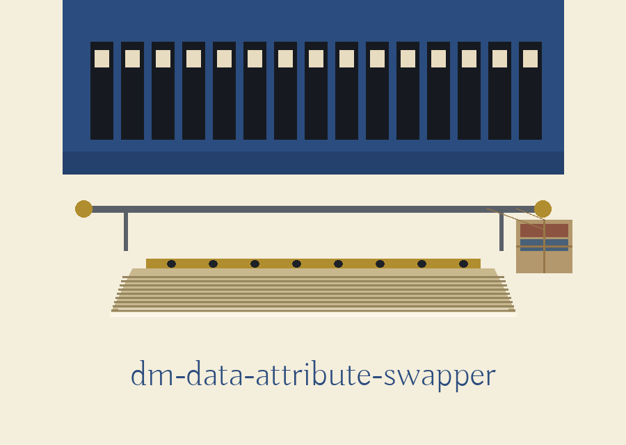

dm-data-attribute-swapper: The Bookmobile's Mountain Circuit
dm-data-attribute-swapper: The Bookmobile's Mountain Circuit names itself in that form throughout this page. The page is laid out as a circuit of stops, one stop per plate, joined by a thin route line down the left margin. Brass marks each stop on the route line. String appears only on parcel and pouch details in the hero still.

Output File, Defaults to masked_data.csv
One Side Moves Straight, One Side Is Shuffled
Pair Order Changes the Result
No Run Comes Back Exactly
Stop one: the job
This program breaks the pairing between columns. Given a data file and a separate configuration file naming pairs of columns, it rearranges values so that a row no longer holds the combination it started with. Correlations between the named attributes are disrupted because the values stop travelling together.
Stop two: the exchange, honestly
For each named pair, the second column receives the first column values in their original row order. The first column receives the second column values shuffled into a new order. So one side of the pair moves straight across, and the other side comes across scrambled. A plain row by row trade would keep every pairing intact, and this program pointedly does not do that.
Stop three: the true working call
python3 main.py <data_file> <config_file> [--output_file <output_file>] [--log_level <level>]
The call is python3 main.py, then the data file path, then the configuration file path. Two optional flags follow, for output path and for log level. Placeholders stand in for every path. No real data file, no real configuration, and no actual column name from anyone's dataset appears anywhere on this site.
Stop four: install, corrected
git clone https://github.com/ShadowGuard-AI/dm-data-attribute-swapper
The clone line above reads git clone https://github.com/ShadowGuard-AI/dm-data-attribute-swapper, organisation hyphenated and correct. A note beneath records that the README names a different organisation in that line, and that this site has not copied the error.
Stop five: the controls in parser order
Data file, positional, CSV or Excel. Configuration file, positional, YAML. Output file, optional, with its short flag -o, defaulting to a CSV file named masked_data.csv in the working directory when the flag is absent. Log level, optional, with its short flag -l, default INFO, accepting the five standard level names: DEBUG, INFO, WARNING, ERROR, CRITICAL.
Stop six: what a valid configuration must look like
The configuration must be a mapping. It must carry the key columns_to_swap. That value must be a non empty list. Each entry must be a list of exactly two column names. The shape, with placeholder names only:
columns_to_swap: - [first_placeholder_column, second_placeholder_column]
No columns from a real dataset are shown.
Stop seven: sequence, repetition, and the limit on calling a run back
Pairs are applied in the order the configuration lists them, against the same table. A column named in two pairs is therefore rearranged twice, the second time working on values the first arrangement already moved. The outcome depends on the ordering of the pairs, not only on which pairs are present. Beside this, at the same size, the reproducibility limit: the shuffle inside each pair is driven by a fresh random choice drawn from a small fixed pool of possibilities, a random integer between 0 and 1000 inclusive, so only 1001 distinct shuffles can ever be selected for a pair. There is no seed flag, and no run can be called back exactly.
Stop eight: the file edges
Input is accepted as CSV, as .xlsx, or as .xls, and any other ending is refused at exit 1. An output name ending in .xlsx or .xls is written as a genuine Excel workbook when an engine for that work is available, and refused at exit 1 when none is. Any other output name is written as CSV. An output path resolving to the data file itself is refused at exit 1 before anything is loaded or written. The requirements file names pandas and PyYAML only, with no Excel engine of any kind, so on a machine built strictly from that file, reading an Excel input and writing an Excel output both fail for want of an engine.
Stop nine: refusal and failure, plainly
A pair naming a column the data does not have ends the run at exit 1 with no output written. An empty columns_to_swap list is rejected as an invalid configuration, exit 1, no output. A malformed configuration, a missing file, and an empty data file each end the run at exit 1. An unrecognised log level does not end the run: the program notes the problem and carries on at INFO.
Final stop: licence
Copyright (c) ShadowGuard-AI
The line above is the README licence line with its organisation corrected to the hyphenated form, and the change is labelled here as a site correction. Alongside it, a separate fact. The repository LICENSE file holds the MIT License. Its holder line gives the pen name in full, followed by a parenthetical given name carrying a single initial, followed by the account handle. That is recorded as fact. The holder line is not reproduced, and the initial is not expanded.
The preserved README record
 # dm-data-attribute-swapper Randomly swaps values between specified columns or attributes within a dataset. The tool takes a configuration file specifying the columns to swap, and a data source file. This is useful for disrupting correlations between attributes. - Focused on Tools designed to generate or mask sensitive data with realistic-looking but meaningless values ## Install `git clone https://github.com/ShadowStrikeHQ/dm-data-attribute-swapper` ## Usage `./dm-data-attribute-swapper [params]` ## Parameters - `-h`: Show help message and exit - `data_file`: Path to the data file (CSV or Excel) - `config_file`: Path to the YAML configuration file naming the column pairs in `columns_to_swap` - `--output_file`: Path to the output file. It must not be the data file: if the output path resolves to the data file, the run refuses and exits 1 before any write. A name ending in .xlsx or .xls is written as a real Excel workbook when an engine for that format is available, and the run refuses at exit 1 when none is available, rather than writing CSV bytes under an Excel name. Any other name is written as CSV. - `--log_level`: Set the logging level (DEBUG, INFO, WARNING, ERROR, CRITICAL) ## Failure rules - If any configured pair names a column that is not in the data, the run exits 1 and writes no output. - An empty `columns_to_swap` list is rejected as an invalid configuration: the run exits 1 and writes no output. ## License Copyright (c) ShadowStrikeHQ